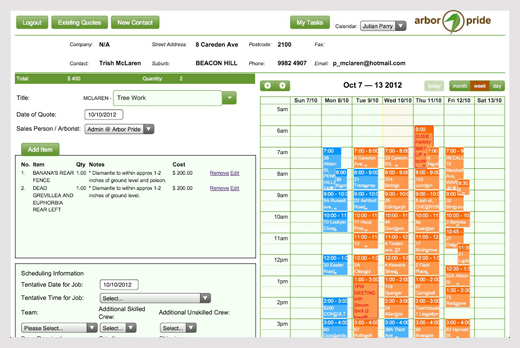

EXAMPLE
ARBOR PRIDE
Radically simplifying processes for a greater enterprise.
Arbor Pride, a successful company offering tree care solutions, began trading in 2005.
In the beginning, their IT solutions were disorganised, non-centralised and through limited scalability, unable to sustain a growing business. Many different IT packages were used – MYOB (finances), MS Excel (customer data) and MS Word (quotes) – and electronic data transfer was problematic and inconsistent. Moreover, hand-processed quotations were time consuming, lacking in essential data and activities were often not recorded due to time constraints.
In 2007, mydigitalstructure changed all of this, providing an 'all-in-one' IT solution while facilitating the growth of the business.

By using ibCom's mydigitalstructure as an IT solution, Arbor Pride have also been able to utilise resources abroad with their management accounting functions (including projection budgeting) all completed in the UK. Due to the closed user-group facility, each entity requiring access to a particular component of the system is made possible. The UK company has access to the financials in the Arbor Pride IT system and in the near future, administrative staff will also be able to work in a different location as access can be granted on an as-needed basis.
This centralisation of capability is of huge benefit to Arbor Pride.
The beauty of the mydigitalstructure solution is that additional "functions" can be added to the system, allowing it to evolve with your enterprise. Indeed, Arbor Pride recently added quotation functionality whereby staff members quoting in the field are able to access the system using mobile devices; in this case, iPads. Quotes are completed at the customer appointment, greatly enhancing efficiency.
This facility sets Arbor Pride apart from their competitors while providing a professional approach. Additionally, this functionality saves at least ten person days per week by setting up a quote, activity and invoice seamlessly. This process efficiency significantly reduces cost.
Arbor Pride's management also benefit from being able to produce marketing figures from the system in any format required. Bar charts and flow charts are now used to express predictions or other necessary financial information. This data is used in all essential reports, for example, the monthly report. The quotes and invoices are a major element of Arbor Pride's business. mydigitalstructure ensures all necessary fields are inserted meaning less clarification is required. Moreover, where technical information or tree names are needed, drop-down lists are provided, eliminating a misunderstanding.
Once the Arbor Pride team had discovered its capabilities and recognised the rewards, the system was fully utilised and the old approach disregarded.
Julian Parry, Managing DIrector, Arbor Pride
More examples
|